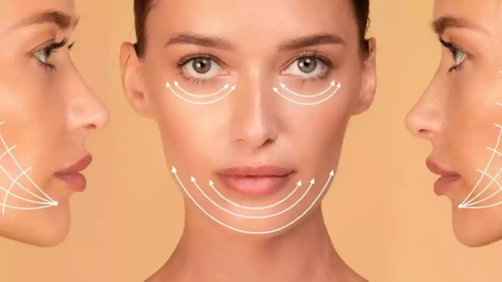
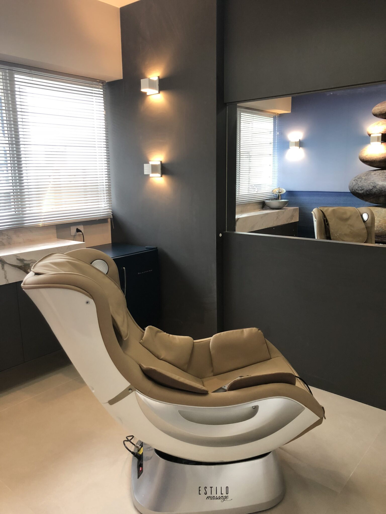

Harmonização facial
Mais equilíbrio sem perder seus traços.
Planejamento facial para suavizar assimetrias, valorizar contornos e manter uma expressão leve e natural.
Estética avançada em Curitiba
Na Sbelt, cada procedimento nasce de um plano individual: realçar sua beleza sem exageros, cuidar da pele e fortalecer sua autoestima para hoje e para os próximos anos.
A Sbelt existe para ajudar mulheres a se reconhecerem no espelho com mais confiança, sem abrir mão da saúde, da naturalidade e do cuidado individual.
A filosofia da Dra. Débora une estética injetável, nutrição farmacêutica e medicina integrativa para construir resultados sustentáveis, respeitando a fase de vida, a anatomia e os objetivos de cada paciente.
Uma visão autoral
O livro escrito pela Dra. Débora aprofunda a ideia que guia a Sbelt: beleza não precisa ser pressa, padrão ou excesso. Beleza pode ser saúde, presença, escolha e longevidade.
Essa visão transforma a avaliação em um momento de estratégia: entender pele, rosto, rotina, queixas, desejos e saúde para indicar apenas o que faz sentido.
Tratamentos
Em vez de começar pelo procedimento, a Sbelt começa pela sua intenção. A técnica vem depois da escuta.

Planejamento facial para suavizar assimetrias, valorizar contornos e manter uma expressão leve e natural.
Toxina botulínica, preenchimentos e bioestimuladores indicados com critério para preservar naturalidade.
Estratégias personalizadas para apoiar pele, metabolismo, disposição e longevidade com acompanhamento profissional.
Método Sbelt
Antes de qualquer indicação, a Dra. Débora entende sua história, rotina, expectativas e o que você não quer que aconteça com o seu rosto.
Comece pela avaliação
Toque em uma opção e envie uma mensagem pronta para a equipe Sbelt.
A experiencia

Duvidas comuns
O planejamento da Sbelt prioriza naturalidade. A indicação é feita para realçar seus traços, não para apagar sua identidade.
Não. A avaliação existe justamente para entender sua queixa e indicar o caminho mais adequado para seu rosto, pele e momento de vida.
Na Sbelt, estética é parte de uma visão maior de saúde, autoestima e longevidade. Por isso, nutrição farmacêutica e cuidado integrativo também entram no planejamento quando fazem sentido.
A Sbelt fica na Avenida República Argentina, 1228, Água Verde, Curitiba/PR.